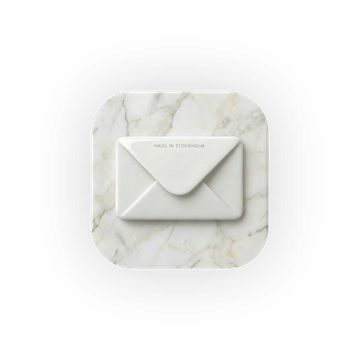
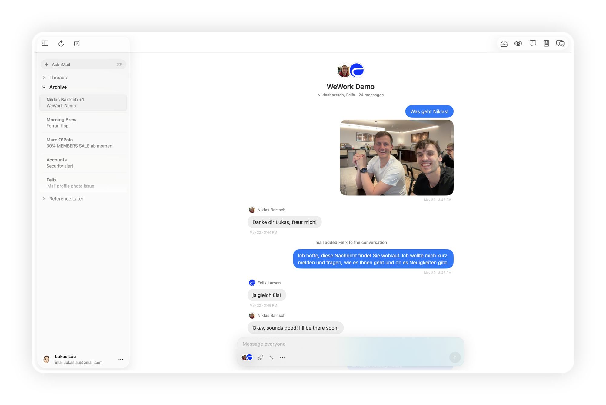

iMail

iMail exists to make our day-to-day email experience nicer. We strip away all the nonsense like logs, signatures and all the other ugly mess. On iMail, every thread is just like an iMessage chat. You only see the actual messages in a clean chat interface. iMail is currently in a closed beta with native apps available for both the Mac and the iPhone.
Join the Waitlist